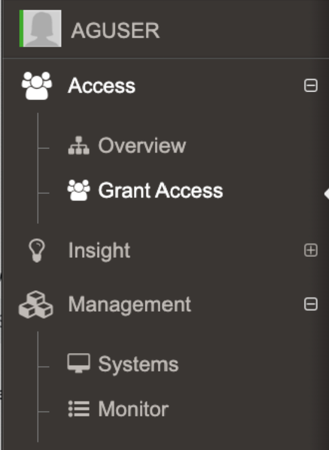
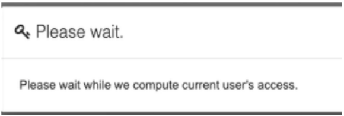

Formerly SecureONE
JITA access is provided when an AD user account is in the Administrators Inventory for a system. The user can be in the Administrators Inventory for a system in three ways:
When User role searches for computers in Grant Access, Insights or Systems Management or via API, the results will be restricted to computers on which they have Persistent or JITA access.
Prior to this change (2.16) when a user attempted to JITA or interact to an endpoint where they lacked access they would receive
Question
For SecureONE (Netwrix Privilege Secure for Discovery) users, how does MySystems work?Answer
IMPORTANT: This relates to the 2.16 change* where user accounts can only see the systems they have proper access to
Main Document
When a user signs in they will have access to:- Overview
- Grant Access
- Insight
- Systems
- Monitor
The change from 2.16 implemented a cache called MySystems which is created upon login*.NOTE: Insights may or may not be available depending on how the environment is configured. This can be an Admin only feature

JITA / Persistent Access
Netwrix Privilege Secure for Discovery members with a User role searches for computers in Grant Access, Insights or Systems Management or via API, the results will be restricted to systems on which they have JITA access or the user is persistent.JITA access is provided when an AD user account is in the Administrators Inventory for a system. The user can be in the Administrators Inventory for a system in three ways:
- Directly in the Administrators Inventory
- Being a member of an AD group that is in the Administrators Inventory
- Being a member of an AD group that is nested in an AD group in the Administrators Inventory
- The user account is directly in the Administrators Inventory and set to persistent
- Being a member of an AD group in the Administrators Inventory that is set to persistent
- Being a member of an AD group that is nested in a persistent AD group in the Administrators Inventory
Appendix
The API endpoint associated to creating the cache for MySystems is:/api/v1/mysystems/createcacheUser Role only sees My Systems
Prior to this change (2.16) when a user attempted to JITA or interact to an endpoint where they lacked access they would receive
403 Forbidden.
* This has changed in versions 2.17.2 and onward, where it's generated after login when a user interacts with the Grant Access search or the Management > Systems. There is a toast notification that pops up when the mySystems cache is being generated indicating it's not yet complete.
